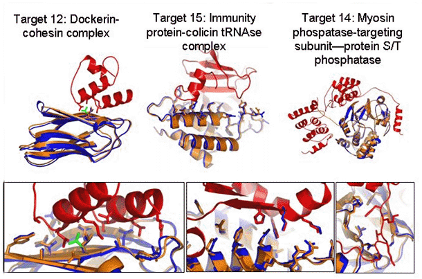
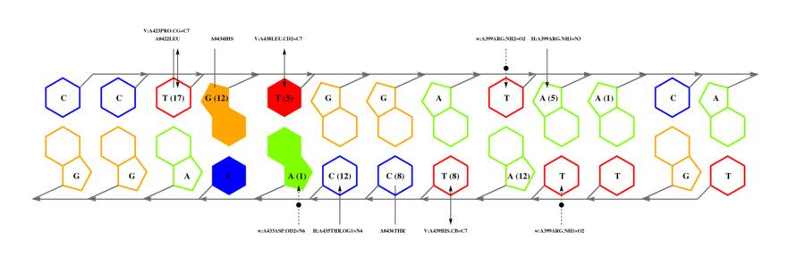

En la sección 6.6 aprovechábamos las coordenadas de un complejo molecular conocido para aproximar la interfaz de una secuencia homóloga. Cuando no disponemos de estructuras de referencia, el estudio de las conformaciones que adoptan las macromoléculas cuando interaccionan de forma transitoria es aun más difícil, con costes computacionales poco asumibles. La razón de esto es que hay muchos grados de libertad y un gran número de átomos del sistema pueden moverse. Por tanto, los algoritmos de docking suelen emplear estrategias para ahorrar recursos, como por ejemplo el uso de transformadas de Fourier en vez del empleo explícito de matrices de rotación y traslación (Katchalski-Katzir et al., 1992).
Un subproblema específico es el acoplamiento entre una enzima y su sustrato, una tarea para la que la información genómica (operones) puede ser muy valiosa (Zhao et al., 2013).
Además de bancos de pruebas publicados por algunos desarrolladores (Yu & Guerois, 2016), desde el año 2001 hay en marcha un experimento colectivo (CAPRI) donde regularmente se ponen a prueba los diferentes algoritmos existentes para predecir, antes de su publicación, las poses de complejos proteicos cuyas estructuras se han resuelto experimentalmente (normalmente por cristalografía).
La lista de programas de acoplamiento molecular o docking es muy amplia, por lo que puede ser buena idea consultar los resultados recientes de CAPRI para seleccionar el software adecuado para nuestras necesidades. Un problema añadido es que en mi experiencia éstos son programas hechos por definición para usuarios avanzados, que requieren de cierta experiencia sobre todo a la hora de interpretar los resultados.
|

|
Una buena manera de empezar a jugar con software de docking puede ser instalando el software
PyRosetta
(Chaudhury et al., 2010). Este software nos permite hacer,
de forma programática, una simulación docking en miniatura, en este caso entre un dúplex de ADN y
el factor de transcripción DnaA , algo que puede plantearse simultáneamente como un problema clásico
de docking y como un problema de especificidad de reconocimiento:
#!/usr/bin/env python2.6
""" prog4.3 Toma un complejo proteina-DNA en formato PDB y hace una simulacion de docking,
devolviendo un archivo PDB, inspirado en codigo de http://graylab.jhu.edu/pyrosetta/scripts.html
Para mas detalles ver: http://pyrosetta.org/downloads/documentation/Reference_Appendix_A.pdf """
__author__ = 'Bruno Contreras-Moreira'
import os,re
from rosetta import *
complexfile = './files/1j1v_withH.pdb'
tmpfile = 'tmp.rosetta'
prefijo_salida = 'docking_output' # define nombre de archivos generados, ver 2.5
intentos = 10
## 1) subrutinas
def PDB2Rosetta(ficheroPDB,ficheroRosetta):
"""Lee un fichero PDB y crea otro con el formato adecuado para Rosetta.
ATOM 508 OP1 DA 213 0.287 26.129 7.841 1.00 0.00 # original
ATOM 5389 O5* A C -10 30.936 109.878 105.387 1.00 0.00 # Rosetta """
coords,num_cambios = [],0
# 1) lee coordenadas PDB
pdbfile = open(ficheroPDB,'r')
try:
for line in pdbfile:
if(line[0:4] == 'ATOM'):
if(line[15:16] == "\'"):
line = line[0:15] + '*' + line[16:]
num_cambios += 1
if(line[17:19] == " D"):
line = line[0:18] + ' ' + line[19:]
num_cambios += 1
coords.append(line)
else: coords.append(line)
finally:
pdbfile.close()
# 2) escribe archivo en formato corregido
rfile = open(ficheroRosetta, 'w')
for line in coords:
if(line[0:6] == 'HEADER'):
line += "REMARK reformatted for Rosetta\n"
print >> rfile, "%s" % (line),
rfile.close()
return num_cambios
def Rosetta2PDB(ficheroRosetta,ficheroPDB):
"""Lee un fichero Rosetta y crea otro con formato PDB.
ATOM 508 OP1 DA 213 0.287 26.129 7.841 1.00 0.00 # original
ATOM 5389 O5* A C -10 30.936 109.878 105.387 1.00 0.00 # Rosetta """
coords,num_cambios = [],0
# 1) lee coordenadas de Rosetta
patronNT = re.compile(' ([A|C|G|T|U])')
rfile = open(ficheroRosetta,'r')
try:
for line in rfile:
if(line[0:4] == 'ATOM'):
if(line[15:16] == "*"):
line = line[0:15] + "'" + line[16:]
num_cambios += 1
match = patronNT.match(line[17:20])
if match:
line = line[0:18] + 'D' + line[19:]
num_cambios += 1
coords.append(line)
else: coords.append(line)
finally:
rfile.close()
# 2) escribe archivo en formato PDB
pdbfile = open(ficheroPDB, 'w')
for line in coords:
if(line[0:6] == 'HEADER'):
line += "REMARK PDB reformatted from Rosetta coordinates\n"
print >> pdbfile, "%s" % (line),
pdbfile.close()
return num_cambios
## 2) programa principal
num_cambios = PDB2Rosetta( complexfile, tmpfile )
print "# convierto complejo %s en %s (%d cambios)\n\n" % (complexfile,tmpfile,num_cambios),
# 2.1) inicia Rosetta y lee conformacion de partida
init()
p = Pose()
pose_from_pdb(p,tmpfile)
# 2.2) prepara docking y guarda pose inicial
DockingProtocol().setup_foldtree(p, 'A_BC')
dock_jump = 2 # en las coordenadas la proteina A aparece en tercera posicion,
# asi especificamos que trate como un todo al DNA (BC) para hacer
# docking contra A
p_entrada = Pose()
p_entrada.assign(p)
# 2.3) define esquema de evaluacion de mecanica molecular
funcion_eval = create_score_function('dna')
# 2.4) calcula perturbacion rigida arbitraria e inicia motores de giro y movimiento
perturbacion = RigidBodyPerturbMover(dock_jump, 2, 15) #traslacion de 3Ansgtrom y rotacion de 8 grados
spin = RigidBodySpinMover( dock_jump )
slide_into_contact = FaDockingSlideTogether( dock_jump )
# 2.5) inicia motor de docking y ejecuta N simulaciones
# docking de alta resolucion, para parejas cercanas en el espacio:
#High-resolution, all-atom based MCM search with rigid-body moves, side-chain packing and minimization
# en contraste con docking de baja resolucion:
# Low-resolution, centroid based MC search (50 RigidBodyPerturbMoves with adaptable step sizes)
print "comienzo docking (%d simulaciones MonteCarlo)..." % (intentos)
docking_highres = DockingHighRes(funcion_eval, dock_jump)
jd = PyJobDistributor(prefijo_salida, intentos, funcion_eval)
while (jd.job_complete == False):
p.assign(p_entrada) # copia conformacion/pose inicial
perturbacion.apply(p) # aplica perturbacion rigida calculada en 2.4
spin.apply(p)
slide_into_contact.apply(p)
docking_highres.apply(p) # ejecuta algoritmo de docking
jd.output_decoy(p) # imprime PDB de esta simulacion de docking
# 2.6) comprueba resultados y reformatea coordenadas generadas a PDb
patron = re.compile('filename:\s+(\S+)\s+total_score:\s+(\S+)')
fichero_resumen = prefijo_salida + '.fasc'
if(os.path.isfile(fichero_resumen) == True):
print "\n# resultados en %s :\n\n" % (fichero_resumen),
salida = open(fichero_resumen,'r')
for line in salida:
match = patron.match(line)
if match:
rosetta_outfile = match.group(1)
pdb_outfile = rosetta_outfile # sobreescribe archivo de salida de Rosetta
Rosetta2PDB(rosetta_outfile,pdb_outfile)
print "> %s valoracion: %f\n" % (pdb_outfile,float(match.group(2))),
salida.close()
# 2.7) limpieza
os.unlink(tmpfile)
Como resultado de las simulaciones de docking tendremos una serie de complejos, que pueden o no mostrar interfaces relevantes en términos biológicos, dependiendo de la profundidad del muestreo realizado y el análisis posterior de los resultados, que obviamente requiere de cierta experiencia y sobre todo conocimiento de las moléculas implicadas. En concreto en el ejemplo 4.3, posiblemente como consecuencia del limitado muestreo (N=10), ninguna de las interfaces resultantes de mis simulaciones docking_output.tgz consigue reconstruir la interfaz descrita experimentalmente:
|

|